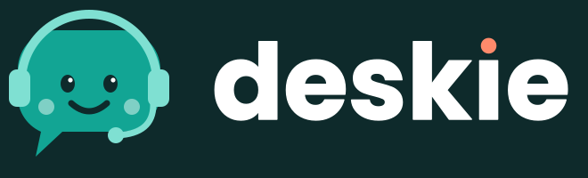
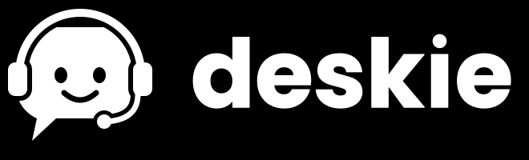
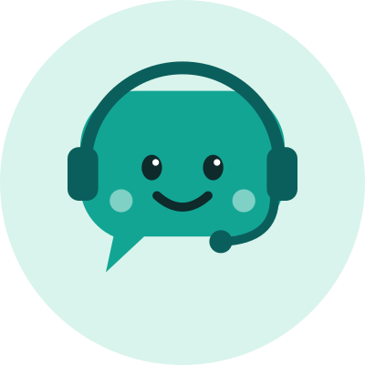
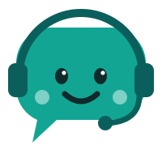

Deskie, the voice at the front desk
A friendly speech-bubble mascot wearing a headset: it answers the phone for a clinic. Clean teal, calm shapes, nothing that looks like a doctor or a person.
Versions
Full colour
Default. Slides, the console header, documents.

On dark
Dark slides and the dark console theme.
One colour, black
The printed desk card, stamps, fax and photocopies.

One colour, white
Over photos or a single brand colour.

Profile picture
WhatsApp, SMS sender and social avatars. Crops to a circle.

Mascot alone
Stickers, empty states, the end of a slide deck.
Favicon and small sizes
Below 40 px the headset turns to mush, so the favicon is a simplified tile: a white bubble with the face, on teal.
Deskie console
in a browser tabColour
Deskie teal
The mascot body, the dot on the i
#12A594The mascot body, the dot on the i
Headset teal
Headset, mic, favicon face
#0A5F5CHeadset, mic, favicon face
Ink
Wordmark, eyes, dark backgrounds
#0E2A2BWordmark, eyes, dark backgrounds
Mint
Cheeks, profile picture, light panels
#D9F4ECCheeks, profile picture, light panels
Coral
The i-dot on dark only. One small accent
#FF8A6BThe i-dot on dark only. One small accent
Using it
- Leave clear space around the logo equal to the height of the letter d's bowl.
- Keep the full logo at 120 px wide or more. Below that, use the mascot alone, and below 40 px the favicon tile.
- Do not recolour the mascot, tilt it, or give it a different expression on a screen that shows patient information.
- Say what Deskie is wherever the logo appears on a call surface: "automated assistant". The logo does not replace the spoken disclosure.
- The wordmark is outlined from Poppins Bold (SIL Open Font License), so the files need no font installed.